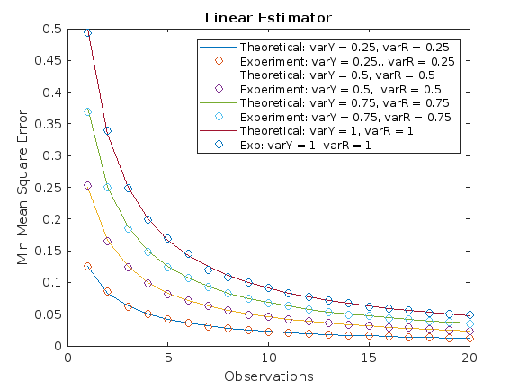

Contents
Nicolette, Armaan and Nishat
clc; clear;
Part 1
Implement the Bayes MMSE and Linear MMSE estimators from examples 8.5 and 8.6. from the MIT notes. Simulate this system by random draws of Y and W, and then estimating Y from the observations X = Y + W. Verify that your simulation is correct by comparing theoretical and empirical values of the MSE. Report your results in a table.
N = 10000; Y = 2*rand(1,N)-1; % generates 10000 random numbers between -1 and 1 w/ equal distribution W = 4*rand(1,N)-2; % generates 10000 random numbers between -2 and 2 w/ equal distribution X = Y + W; Z = X; % transform values of X in a piecewise manner X(X>-1 & X<1) = 0; % set any element of X betewen -1 and 1 (exclusive) to 0 X(X<-1) = 0.5+X(X<-1)*.5; % set any element of X that is less than -1 to a transformed value that scales the range of X from -inf to -1 to 0 to 0.5 X(X>1) = -0.5+X(X>1)*.5; % set any element of X greater than 1 to a transformed value that scales the range of X from 1 to ing to -0.5 to 0 bayesian_MSE = mean(mean((Y - X) .^ 2)); % calculate the bayesian MSE by taking the mean of the mean sq error between original Y and transformed X linear = Z/5; linear_MSE = mean(mean((Y-linear).^2)); % calculates the LMSE by taking the mean of the mean sq error between Y and Z/5 % compare theoretical and experimental values of Bayesian and Linear MMSE % theoretical values are set to [1/4;4/15] T = table([1/4;4/15],[bayesian_MSE;linear_MSE],'VariableNames',{'Theoretical','Experimental'},'RowNames',{'Bayesian','Linear'}); disp(T)
Theoretical Experimental
___________ ____________
Bayesian 0.25 0.25025
Linear 0.26667 0.26876
Part 2
Implement the linear estimator for multiple noisy observations, similar to example 8.8 from the MIT notes. Extend this example so that it works for an arbitrary number of observations. Use Gaussian random variables for Y and R. Set μy = 1. Experiment with a few different variances for both Y and R. On one plot, show the mean squared error of your simulation compared to the theoretical values for at least 2 different pairs of variances.
% pre-allocate space lin = zeros(20,4); theoretical = zeros(20,4); for m = 1:20 [theoretical(m,:), lin(m,:)] = scenario2(m); % function gets called 20 times and stores results in theoretical and exp MMSE estimates in 2 arrays end figure % create the plot with 4 subplots to account for the different variance values to compare theoretical + exp mmse poss = 1; % variable used to loop through 4 subplots while poss <= 4 plot(1:1:20, theoretical(:,poss)); hold on; scatter(1:1:20, lin(:,poss)); hold on; poss = poss + 1; end title("Linear Estimator"); xlabel("Observations"); ylabel("Min Mean Square Error");legend('Theoretical: varY = 0.25, varR = 0.25 ', ... 'Experiment: varY = 0.25,, varR = 0.25 ', 'Theoretical: varY = 0.5, varR = 0.5', ... 'Experiment: varY = 0.5, varR = 0.5', 'Theoretical: varY = 0.75, varR = 0.75', ... 'Experiment: varY = 0.75, varR = 0.75','Theoretical: varY = 1, varR = 1','Exp: varY = 1, varR = 1'); % The function below will take some input z and find the theoretical & exp mmse estimates for 4 variance values function [theoretical_MMSE, exp_MMSE] = scenario2(z) N = 10000; % number of iterations for generating random variables % variances that will be used to generate random Y and R random variables Y_variance = [0.25,0.5,0.75,1]; R_variance = [0.25,0.5,0.75,1]; % pre-allocate exp_MMSE = zeros(4,1); theoretical_MMSE = zeros(4,1); % calculate the theoretical mmse for each combo of Y and R variances i = 1; while i <= 4 theoretical_MMSE(i,:) = (Y_variance(i) * R_variance(i)) / (z * Y_variance(i) + R_variance(i)); i = i + 1; end % initializes matricies that will later store random variables Y = zeros(4, N, 1); h = zeros(4, N ,1); R = zeros(4, N, z); X = zeros(4, N, z); for i = 1:4 % generate random variables for Y, R, and X using the specified variance vals Y(i,:,:) = repmat(sqrt(Y_variance(i)) .* randn(N, 1) + 1, [1 1 1]); % generate 4xNx1 matrix where N is the number of samples and 1 is the number of features R(i,:,:) = sqrt(R_variance(i)) .* randn(N, z); % generate 4xNxz where z is the number of features for j = 1:z X(i,:,j) = R(i,:,j) + Y(i,:,:); % generate 4xNxz matrix for X by adding corresponding Y and R matrices for i end vR = zeros(z, 1); Xt = reshape(X(i,:,:), N, z); Yt = Y(i,:)'; n = 1; % this loop calculates the var for x-y for each z val vR = zeros(1, z); while n <= z XminusY = Xt(:,n) - Yt; vR(n) = var(XminusY); n = n + 1; end min_mean_sq = (1 / (z * var(Yt) + mean(vR))) * (mean(vR) * mean(Yt) + var(Yt) * sum(Xt, 2)); % finds MMS h(i,:,:) = min_mean_sq; exp_MMSE(i,1) = mean((Yt - min_mean_sq) .^ 2); %calculate emperical MMSE end end